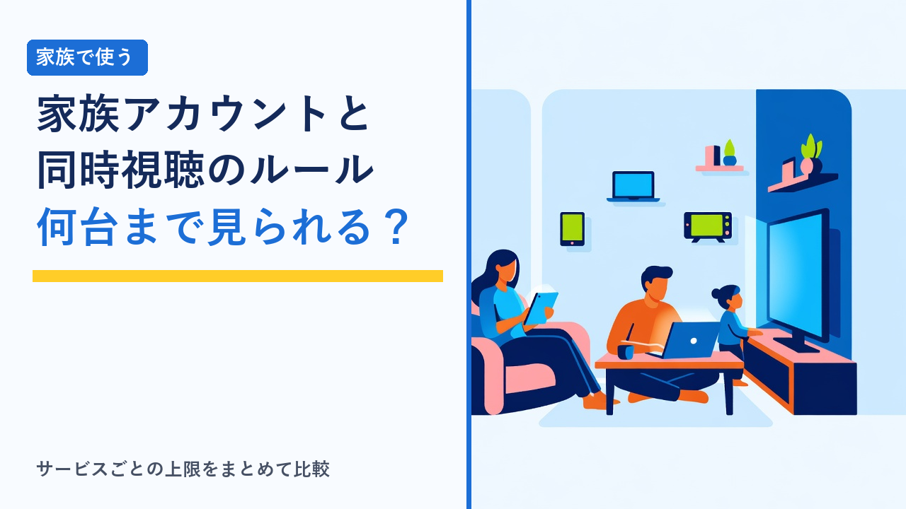

動画配信サービスの家族アカウント・同時視聴ルールまとめ
2026-08-17 更新

動画配信サービス（VOD）を家族で使うとき、「1契約で何人まで使えるのか」は料金と同じくらい重要な比較軸です。ところが各社の説明を読むと、「同時視聴」「プロフィール」「デバイス登録」といった似た言葉が並び、どれが人数の上限を決めているのか分かりにくくなっています。この記事では、家族利用に関わるルールの種類と、それぞれが何を制限しているのかを客観的に整理し、契約前に確認しておきたいポイントをまとめます。
「同時視聴」と「プロフィール分け」は別のルール
家族利用でまず押さえたいのは、次の3つが別々のルールとして設定されているという点です。混同すると「登録はできたのに同時に見られない」といったすれ違いが起きます。
- 同時視聴数：同じ瞬間に、いくつの画面で再生できるかの上限。家族が別々の部屋で同時に見るときに効いてくるのはここです。
- プロフィール（ユーザー）数：視聴履歴やお気に入り、レコメンドを人ごとに分けられる機能。分けられる数が多くても、同時に再生できる数が増えるとは限りません。
- デバイス登録数：アカウントに紐づけられる端末の上限。同時に使わなくても、テレビ・スマホ・タブレットと登録していくと上限に達することがあります。
つまり「プロフィールを4つ作れる＝4人が同時に見られる」ではありません。同時視聴数が1のサービスでは、プロフィールを分けても、誰かが見ている間は他の人は再生できない仕組みです。
家族利用に関わるルールの種類
下表は、各社の規約でよく設定されている項目と、確認しておきたい観点を整理したものです。具体的な数値や条件はサービス・プランによって異なり、変更されることもあるため、契約前に必ず公式サイトで最新の情報を確認してください。
| ルールの種類 | 何を制限するか | 確認しておきたい点 |
|---|---|---|
| 同時視聴数 | 同じタイミングで再生できる画面の数 | プランによって上限が変わることがある。上限を超えるとエラー表示で再生できない |
| プロフィール数 | 視聴履歴・レコメンドを分けられる人数 | キッズ向けプロフィールの有無、視聴制限（ペアレンタルコントロール）の設定範囲 |
| デバイス登録数 | アカウントに紐づけられる端末の総数 | 買い替え時の登録解除方法、解除できる回数の制限 |
| 利用者の範囲（世帯条件） | 誰とアカウントを共有してよいか | 「同一世帯」と定義されている場合が多い。別居の家族・友人との共有は規約違反になり得る |
| ダウンロード（オフライン視聴） | 端末に保存できる本数・端末数 | 同時視聴とは別枠で上限がある場合がある。保存期間の期限にも注意 |
| 購入・課金操作 | レンタルや追加課金を誰が実行できるか | プロフィールごとの購入制限、暗証番号（PIN）設定の有無 |
家族で使うときによくあるつまずき
ルールを理解していないと起こりやすいのが、次のようなケースです。いずれも設定を先に済ませておけば避けやすいものです。
- 同時視聴の上限に当たって再生できない：リビングのテレビで再生したまま放置していると、それが1画面としてカウントされ続けることがあります。使い終わったら再生を停止する運用にしておくと衝突が減ります。
- 視聴履歴とレコメンドが混ざる：全員が同じプロフィールで見ていると、おすすめ表示が家族全員の好みの混合になり、「続きから見る」も分かりにくくなります。人数分のプロフィールを最初に作っておくのが確実です。
- 子どもが年齢に合わない作品を見られてしまう：キッズ向けプロフィールや視聴年齢制限は、多くのサービスで自分で設定する必要があります。既定のままでは制限がかかっていない場合があります。
- 意図しない課金が発生する：見放題対象外の作品はレンタル・購入扱いになることがあります。購入時のPIN設定ができるサービスなら、有効にしておくと安心です。
- 端末登録の上限に達して新しい機器で見られない：スマホやテレビを買い替えた際は、古い端末の登録解除を忘れずに行いましょう。
サービスの型による傾向の違い
家族利用のしやすさは、サービスの設計思想によっても傾向が分かれます。
| サービスの型 | 家族利用の傾向 | 相性のよい家庭 |
|---|---|---|
| 総合型の見放題VOD | プロフィール分けと複数同時視聴に対応する設計が多い | 家族それぞれが違うジャンルを見る |
| 低価格・単機能型のVOD | 同時視聴数が絞られていることがある | 視聴する人が1〜2人に限られる |
| 編成型（放送系）のサービス | ライブ中継など同時刻に視聴が集中しやすい | 家族で同じ番組を一緒に見る |
| 通信会社・他サービス経由の加入 | アカウント管理や解約窓口が加入経路側になる場合がある | すでにその経路の契約でまとめたい |
編成型サービスの特徴についてはWOWOWオンデマンドはどんな人におすすめ？他のVODとの違いまとめで整理しています。
選び方のポイント
- 「同時に見る人数」から逆算する：家族の人数ではなく、同じ時間帯に別々の画面で見る最大人数が基準です。夕食後の時間帯など、視聴が重なりやすい時間を思い浮かべて考えると現実的な数が見えます。
- プロフィール機能の有無を確認する：レコメンドや「続きを見る」が混ざると使い勝手が下がります。人数分のプロフィールを分けられるかは、契約前に確認しておきたい項目です。
- 子どもが使うなら制限機能を先に見る：年齢別の視聴制限、キッズ用画面、購入時のPIN設定など、必要な機能が揃っているかを確認しましょう。
- 規約上の共有範囲を確認する：多くのサービスは同一世帯での利用を前提としています。離れて暮らす家族との共有は認められていない場合があるため、規約の記載を確認してください。
- テレビでの視聴方法を確認する：家族で見る場合、対応デバイスやテレビアプリの有無が使い勝手を左右します。手持ちの機器で見られるかを事前に調べておくと安心です。
- まずは無料体験で使用感を試す：同時視聴の上限に実際どのくらい当たるかは、使ってみないと分かりません。体験期間があるサービスは動画配信サービスの無料体験まとめ比較を参考に比較できます。解約予定がある場合はVODサービスの解約忘れを防ぐコツと注意点まとめもあわせてご覧ください。
よくある質問
離れて暮らす家族とアカウントを共有してもよいですか？
サービスによって扱いが異なります。利用規約で「同一世帯」に限ると定めているケースが多く、その場合は別居の家族や友人との共有は規約違反となる可能性があります。共有を前提に契約を検討しているなら、まず該当サービスの規約で利用者の範囲がどう定義されているかを確認してください。
プロフィールを分ければ同時に視聴できますか？
必ずしもそうとは限りません。プロフィール分けは視聴履歴やおすすめを個別化する機能で、同時に再生できる画面数は別途「同時視聴数」として定められています。両方の項目を確認しておくと、契約後のすれ違いを防げます。
1つの契約を家族で使うのと、それぞれ契約するのはどちらが良いですか？
視聴するジャンルが分かれるほど、同時視聴の衝突が起きやすくなります。同じ番組を一緒に見ることが多い家庭なら1契約で足りることが多く、家族それぞれが別ジャンルを大量に見る場合は、同時視聴数の多いプランを選ぶか、目的別に複数のサービスを組み合わせる方法もあります。アニメ中心で選ぶ場合の比較軸はアニメ好きにおすすめのVODサービスはどれ？作品ラインナップの傾向比較で整理しています。